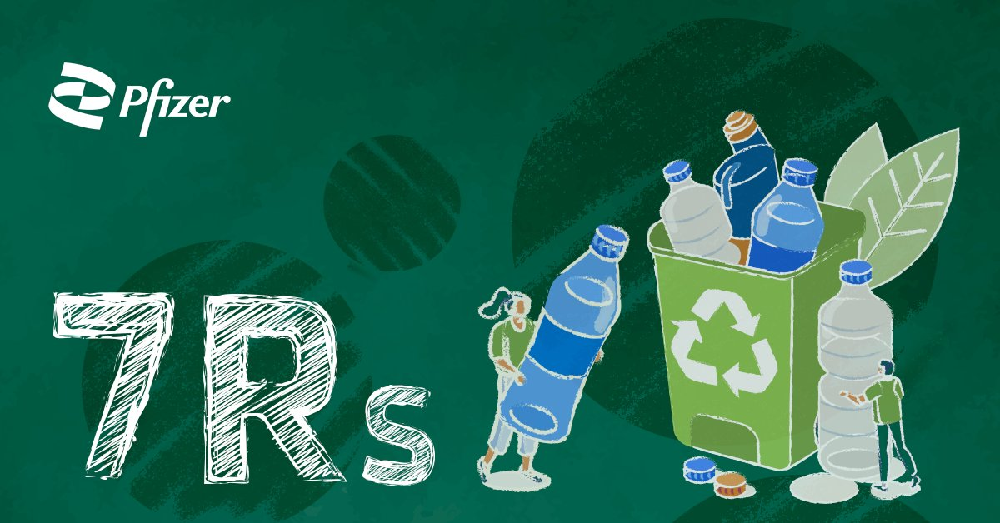

Importancia de las 7 R´S
Importancia de utilizar
Las "7 R" (Rediseñar, Reducir, Reutilizar, Reparar, Renovar, Recuperar y Reciclar) son cruciales para la economía circular y
la sostenibilidad ambiental. Al implementar estas prácticas, se busca minimizar la extracción de recursos naturales,
reducir residuos, prolongar la vida útil de los productos y fomentar un uso más eficiente de los materiales.
¿Por qué son importantes las 7 R?
Reducir la dependencia de recursos naturales
- Al rediseñar productos para que sean más duraderos y fáciles de reparar, se minimiza la necesidad de extraer nuevos recursos naturales.
Recursos naturales.
Minimizar residuos
- La reutilización, reparación y renovación prolongan la vida útil de los productos, reduciendo la cantidad de residuos que terminan en vertederos.
Residuos Industriales.
Ahorrar energía
- Al reutilizar y reparar productos, se reduce la necesidad de producir nuevos, lo que a su vez disminuye el consumo de energía y las emisiones de gases de efecto invernadero.
Ahorro Energético.
Fomentar la economía circular
- Las 7 R promueven un modelo de producción y consumo en el que los residuos se convierten en recursos, cerrando el ciclo de vida de los productos y reduciendo el impacto ambiental.
Economía Circular.
Promover la sostenibilidad
- Al implementar las 7 R, se contribuye a la preservación del medio ambiente y a la construcción de una sociedad más justa y sostenible.
Desarrollo Sostenible.
Conclusión
- Las 7R representan un camino hacia un futuro más sostenible, promoviendo un uso responsable de los recursos y la reducción de la contaminación. Su aplicación individual y colectiva es esencial para proteger el medio ambiente y asegurar un futuro próspero para las próximas generaciones.
DAR CLIC A LA IMAGEN, PARA IRTE A LA PAGINA QUE TU GUSTES
| ¿QUÉ SON LAS 7 R? |
IMPACTO DE LAS 7 R EN LA COMUNIDAD |
.jpeg) |
 |
.jpeg)

.jpeg)
.jpeg)